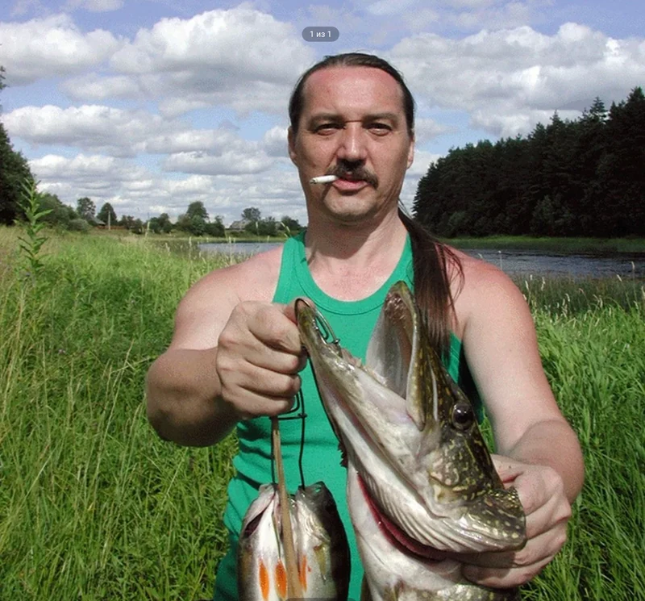

От идеи
до работающего
устройства.
3D-печать, пластиковые изделия, платы и пайка.
Мастерская Андрея Киселёва.
3D-печать, платы
и электроника.
Пластиковая деталь, корпус для платы или электронное устройство. Опишите, что должно получиться: обсудим размеры, компоненты и способ изготовления.
3D-печать из пластика
Пластиковые корпуса, крепления, детали и авторские изделия. Можно прийти с готовой 3D-моделью или обсудить форму и размеры будущей детали.
Платы и пайка
Работа с электронными платами, компонентами и соединениями. Пайка, монтаж и сборка электронных узлов под задачу.
Сборка электроники
Плата, провода, разъёмы и пластиковый корпус — в одном устройстве. Объединение компонентов, аккуратная сборка и проверка работы.
Программное обеспечение
Программа управления помогает настроить режимы, параметры и последовательность работы прибора. На примере K-Slider ниже показано, как интерфейс связан с устройством.
Сначала задача.
Потом решение.
Для первого разговора достаточно описания. Необязательно знать названия компонентов или приносить готовый чертёж.
- 1
Расскажите, что нужно
Что должно делать устройство или деталь, где будет использоваться и какие есть ограничения.
- 2
Обсудим конструкцию
Подберём подход, уточним материалы, размеры, объём работы, стоимость и сроки.
- 3
Изготовим и проверим
После согласования — работа над изделием, сборка и проверка результата.

Андрей Киселёв.
Инженер и мастер.
Инженерия — дело всей жизни.
3D-печать из пластика, работа с платами, пайка и сборка электроники — разные инструменты для одной цели: сделать вещь, которая работает.
Можно обсудить отдельную деталь или задачу целиком. Общаться будете непосредственно с Андреем — от первого вопроса до готового изделия.
Перед первым
разговором
Можно обратиться без чертежа?
Да. Опишите, что хотите получить. Фотография, пример или набросок помогут понять задачу; детали конструкции можно обсудить вместе.
Что прислать для оценки работы?
Описание задачи, примерные размеры и фотографии, если они есть. Укажите, нужна одна деталь или несколько, и есть ли желаемый срок.
Как узнать цену и сроки?
Они зависят от конструкции, материалов и объёма работы. Андрей сможет обсудить стоимость и сроки после знакомства с вашей задачей.
Можно обсудить изготовление слайдера?
Да. Расскажите о камере, характере съёмки и нужном движении. Комплектацию и возможности устройства обсудите с Андреем.
Что нужно
сделать для вас?
Расскажите об идее, пришлите фотографию или набросок. Начнём с разговора.
Связь по телефону, в MAX или через Авито.
В MAX используйте этот же номер. Если пришли с Авито, можно написать в чате объявления.
Канал Андрея на YouTube